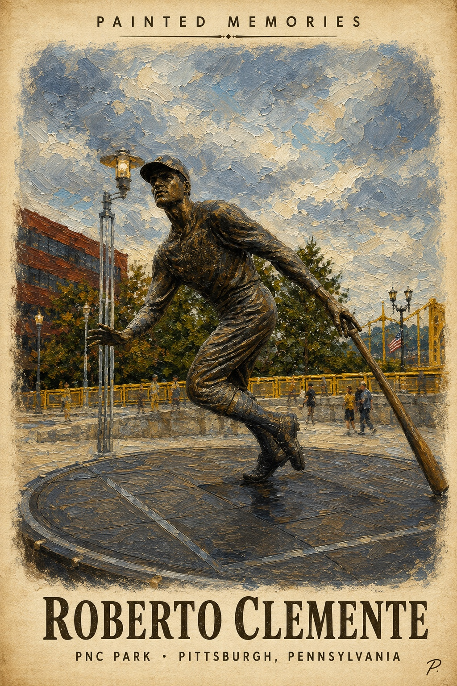
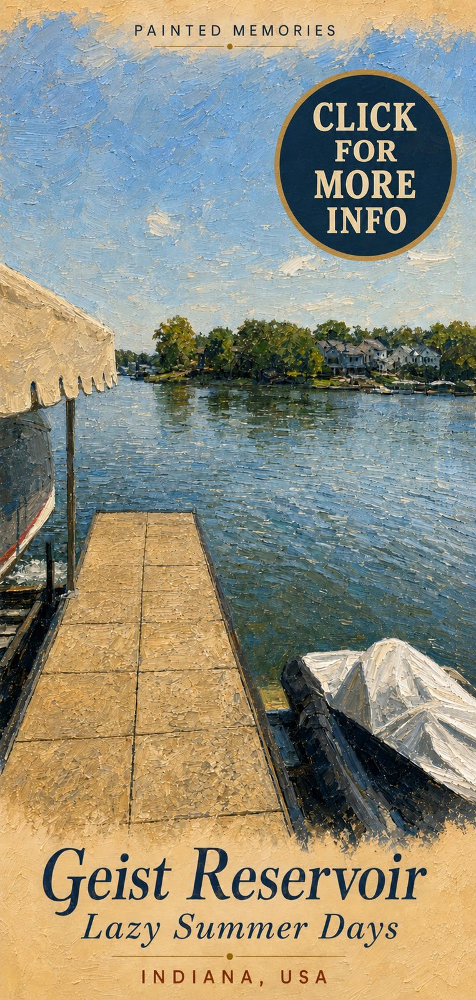
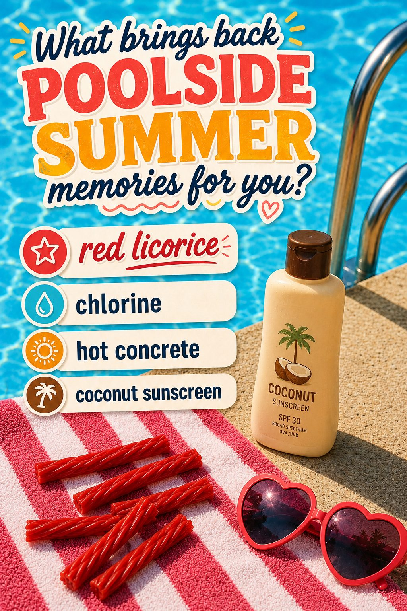

Behind the Opinions
The visual side of I'll Ask For It -- finds, inspiration, and extras that don't fit into a straight opinion piece. Updated straight from the source.
What This Is
Not every opinion fits neatly into a headline. This page is where the extra stuff lives -- the images, references, and finds that inform what gets written about elsewhere on this site. Think of it as the mood board behind the arguments.
It's pulled directly from a living Pinterest board, so it updates as new things get pinned. Check back for more.
Featured

Sports · Pittsburgh
Roberto Clemente was baseball’s most complete right fielder. His statue outside PNC Park honors the player, the humanitarian and the standard he left Pittsburgh.
Read the Story →
Nostalgia · Summer
A quiet afternoon at Geist Reservoir in Indiana offers a reminder that the most memorable parts of summer are often the least complicated.
Read the Story →
Nostalgia · Summer
Red licorice, chlorine, hot concrete, and coconut sunscreen can bring an entire summer rushing back in seconds. Here is why those small sensory memories stay with us.
Read the Story →Live Feed